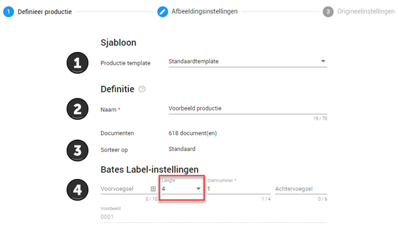
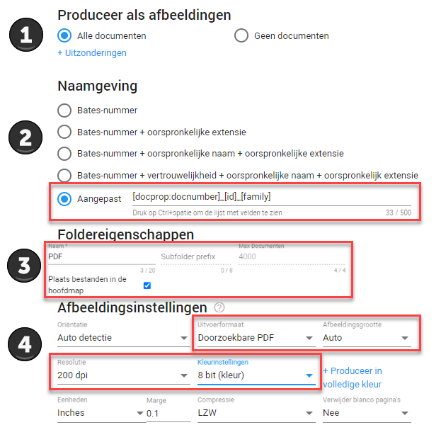
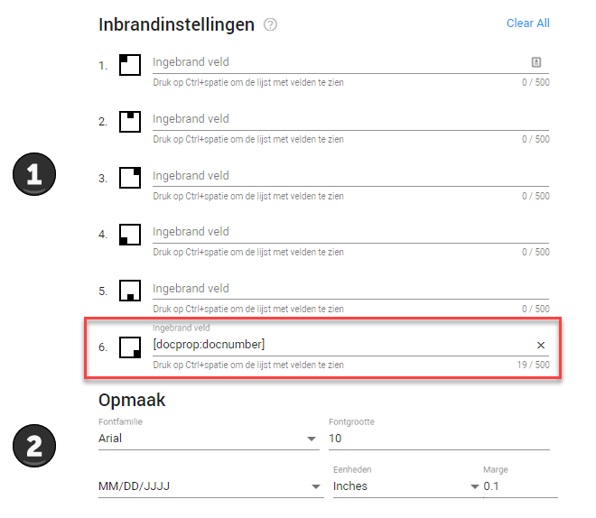
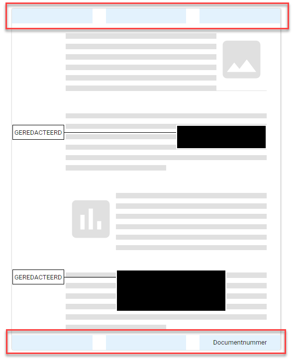
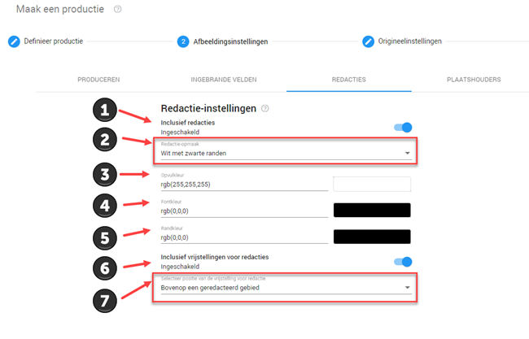
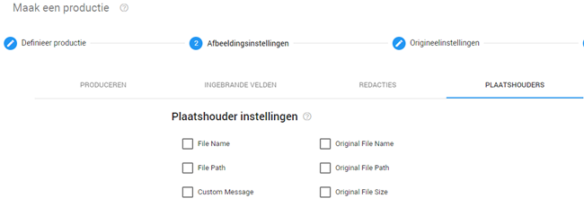
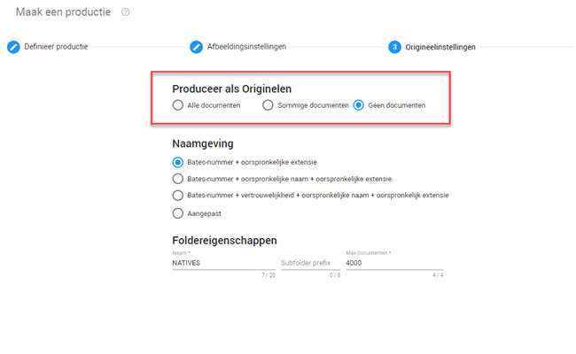
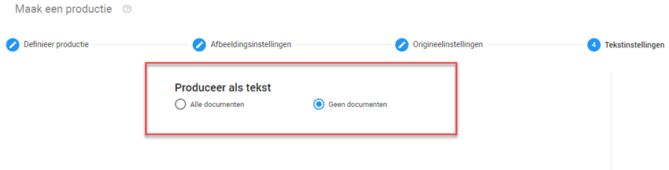
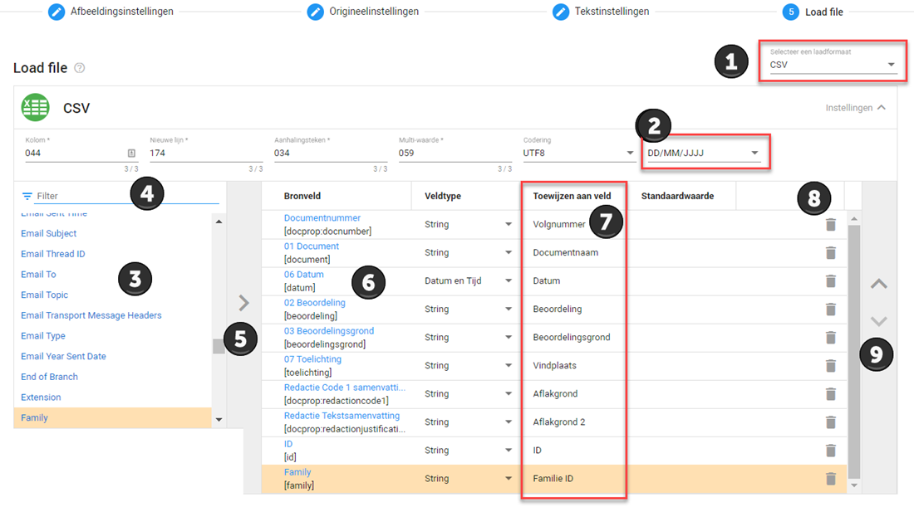
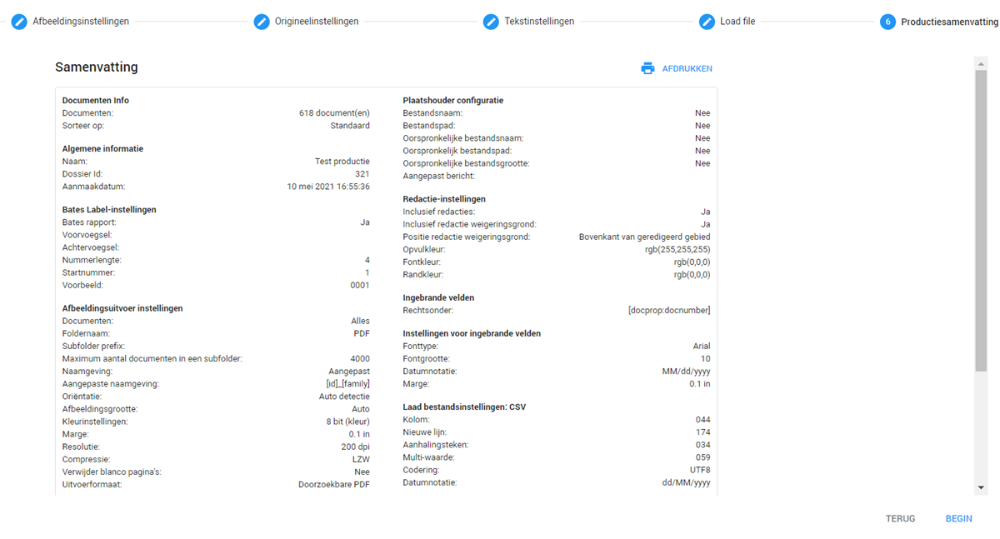

Documenten produceren met permanente aflakking en inventarislijst
Voor een volledige beschrijving van de mogelijkheden die de productie wizard biedt kunt u terecht bij het topic Productions (Engels). Gezien de complexiteit van de mogelijkheden worden enkel de instellingen die van toepassing zijn voor de Woo behandeld. Voor het gemak kunt u de aangepaste instellingen in de omlijnde gedeeltes van de screenshots kopieren bij uw eigen productie om tot een goed resultaat te komen.
Definieer productie

- Indien u voorheen al eerder een productie heeft gemaakt en u deze instellingen graag wilt hergebruiken, dan kunt u in dit dropdown menu de naam selecteren van de betreffende productie waarvan u de instellingen wilt hergebruiken.
-
Hier geeft u de naam op van uw productie.
-
Hier ziet u op welke de wijze de documenten gesorteerd zijn. Indien u wilt dat er bijvoorbeeld op datum gesorteerd wordt dient u voordat u zich naar de productie wizard begeeft deze sortering al toe te passen in de documentenlijst door middel van het klikken op de kolommen.
-
Hier kunt u een volgnummer of een batesnummer creeëren. U kunt later in de productie wizard kiezen of u hier gebruik van wilt maken.
Volgnummer: Elk document krijgt een eigen nummer toegewezen, dit nummer kan vervolgens op het document gebrand worden en in de inventarislijst vermeld worden. Hierdoor creer je een directe relatie tussen de documenten en de inventarislijst.
Batesnummer: Elke pagina van elk document krijg een eigen nummer toegewezen. Dit wordt toegepast in de Amerikaanse rechtspraktijk, zodat het voor beiden partijen altijd in één oogopslag duidelijk is over welke pagina de andere partij het heeft.
Afbeeldingsinstellingen
Produceren

- Hier selecteert u of u de documenten wilt produceren op deze wijze.
-
Hier selecteert u de naamgeving van de documenten. Als u altijd zeker wilt zijn dat alle documenten een unieke/herleidbare naamgeving hebben raden wij aan om als naamgeving [docprop:docnumber]_][id]_[family] te selecteren. U doet dit door op het tekstvlak te klikken. Vervolgens drukt u op uw toetsenbord (linker) control + spatiebalk in, er opent nu een menu. Hier zoekt u het vlak documentnummer onder Huidige productie-informatie in op, deze selecteert u. Vervolgens typt u een lage streep _ en drukt u nogmaals op uw toetsenbord (linker) control + spatiebalk in. Ditmaal selecteert u ID uit het menu. Vervolgens typt u nogmaals een lage streep _ en drukt u nogmaals op uw toetsenbord (linker) control + spatiebalk in. Ditmaal selecteert u Family uit het menu.
Andere wijzes van de naamgevingen van de documenten is mogelijk. Indien u graag de naamgeving op een andere wijze wilt produceren en u dit zelf niet voor elkaar krijgt, neem dan hiervoor contact op met ZyLAB.
-
Hier kunt u de instellingen aanpassen van de folders waar uw documenten uiteindelijk in terecht komen.
Als u Plaats bestanden in de hoofdmap aanvinkt, dan zullen alle bestanden van eenzelfde bestandstype in dezelfde stamfolder worden geplaatst.
-
Hier kunt u de instellingen aanpassen van de kwaliteit van uw documenten. In dit voorbeeld is gekozen voor de minimale vereisten van documenten. U kunt er zelf voor kiezen om bijvoorbeeld een hogere kleurinstelling of een hogere dpi te selecteren zodat uw documenten er beter uit komen te zien. Dit zorgt er echter wel voor dat de productie langer zal duren.
Ingebrande velden

- Hier kunt selecteren welke informatie u wilt inbranden in het daarvoor bestemde gedeelte van het document. Aan de rechterzijde ziet u een voorbeeld van uw document, de blauwe vlakken zijn de gedeelten waar informatie ingebrand kan worden. In dit geval brand u rechtsonderin het volgnummer van het document in. Selecteer daarvoor het tekstvlak bij 6 en verwijder eventueel de tekst die er al in staat. Vervolgens drukt u op uw toetsenbord (linker) control + spatiebalk in. Selecteer in dit menu Document number onder Huidige productie informatie.

-
Hier kunt u de opmaak van de ingebrande tekst aanpassen, bijvoorbeeld het lettertype en de fontgrootte.
Redacties

- Hier kunt u selecteren of u de aflakking wilt produceren op de documenten.
- Hier kunt u selecteren op welke wijze u de aflakking getoond wilt hebben. U selecteert hier Wit met zwarte randen, deze optie zorgt ervoor dat de aflakkingen wit zijn met enkel een klein zwart randje eromheen. Dit is vriendelijker voor het oog en bespaart een hoop inkt indien u de documenten dient uit te printen en is daarmee beter voor het milieu.
- Indien u de opmaak van de redactie op aangepast heeft gezet, kunt u hier de kleur van de aflakking bepalen.
- Indien u de opmaak van de redactie op aangepast heeft gezet, kunt u hier de kleur van de tekst op de aflakking bepalen.
- Indien u de opmaak van de redactie op aangepast heeft gezet, kunt u hier de kleur van de rand van de aflakking bepalen.
- Hier kunt u selecteren of u de tekst van de aflakking, oftewel de aflakgrond, op het vlak wilt laten produceren of in de zijlijn met een klein lijntje naar de aflakking toe. U selecteert hier Bovenop een geredacteerd gebied.
Plaatshouder
Dit wordt niet toegepast bij de Woo en daarom past u hier niets aan. Ondanks dat u hier niets dient aan te passen is een screenshot toegevoegd van hoe het er hoort uit te zien bij uw productie.

Origineelinstellingen

Bij de origineelinstelling kunt u documenten produceren in het originele bestandsformaat. Het is niet mogelijk om aflakkingen te plaatsen op documenten in het originele bestandsformaat. Daarom selecteert u hier Geen documenten, zodat de documenten niet op deze wijze produceren.
Tekstinstellingen

Bij tekstinstellingen wordt enkel de tekst van de documenten geproduceerd in een kladblok (.txt) bestand. Ook hier is het niet mogelijk om aflakkingen te plaatsen en selecteert u dus Geen documenten.
Load file
Bij de Load file produceert u een inventarislijst.

- Bij nummer een kiest u het type bestand dat u wilt maken, voor de inventarislijst selecteert u CSV.
- Hier kunt u selecteren in welk formaat u de notitie van de datum wilt hebben. U selecteert hier DD/MM/JJJJ.
- Hier ziet u de mogelijkheden aan informatie die u kunt selecteren voor uw inventarislijst.
- Hier kunt u filteren tussen de mogelijkheden
-
Als u een veld heeft geselecteerd dat u in uw inventarislijst wilt opnemen klikt u op de pijl naar rechts bij 5 om deze over te plaatsen naar de rechterkolom. Deze kolom bevat de velden die uw inventarislijst zal bevatten. Voor de Woo selecteren we de volgende velden:
-
Document nummer (onder huidige productie informatie)
Dit is het volgnummer - 01 document
Dit is de aangepaste bestandsnaam uit het label Documentnaam. - 06 datum
Dit is de datum uit het label Datum. - 02 beoordeling
Dit is de beoordeling uit het label Beoordeling. - 03 beoordelingsgrond
Dit is de beoordelingsgrond indien een document niet openbaar is uit het label Beoordeling. - 07 toelichting
Dit is de vindplaats van het document indien u deze heeft genoteerd in het label Toelichting indien het document al reeds openbaar is. - Redactie code 1 samenvatting
Dit zijn de aflakgronden die u heeft toegewezen aan de aflakking zoals beschreven bij Aflakgrond toevoegen. - Redactie Tekstsamenvatting
Dit zijn de aflakgronden die u heeft toegewezen aan de aflakkingen door middel van het vrije tekst vlak zoals beschreven bij Aflakgrond toevoegen. - Id
Dit is het unieke ID nummer van het document. - family
Dit is het ID nummer van het bovenliggende document. Hierdoor is het duidelijk welke documenten bij elkaar horen, deze zullen dan allemaal hetzelfde familie ID hebben. Het document dat het ID nummer heeft dat gelijk is aan het familie ID is het hoofddocument.
- Hier ziet u de velden die in uw inventarislijst zullen komen.
- Bij de kolom bij 7 kunt u de kolomnamen opgeven van de betreffende velden die u heeft opgenomen. U geeft de velden de volgende kolomnamen:
| Document nummer | Volgnummer |
| 01 document | Documentnaam |
| 06 datum | Datum |
| 02 beoordeling | Beoordeling |
| 03 beoordelingsgrond | Beoordelingsgrond |
| 07 toelichting | Vindplaats |
| Redactie code 1 samenvatting | Aflakgrond |
| Redactie Tekstsamenvatting | Aflakgrond 2 |
| id | ID |
| family | Familie ID |
- Hier kunt u een veld verwijderen indien u deze toch niet wilt toevoegen aan uw inventarislijst.
- Hier kunt u door middel van de pijlen het geselecteerde veld (geel gemarkeerd) mee naar boven en beneden verplaatsen. Het bovenste veld is de meest linker kolom in uw inventarislijst, het onderste veld is de meest rechter kolom in uw inventarislijst.
Productiesamenvatting
Hier ziet u een samenvatting van de geselecteerde instellingen. U kunt nu op Begin drukken om de productie te starten.

Zodra u de productie heeft aangezet komt u terecht in het productieoverzicht. Hier ziet u alle voltooide en draaiende producties. U kunt uw productie herkennen aan de door u gedefinieerde naam. Een productie kan enige tijd duren voordat deze is voltooid, immers kost het omzetten van de documenten naar PDF-formaat en het permanent inbrengen van de aflakkingen enige tijd. Wanneer het vlak blauw is staat uw productie nog in de wachtrij of wordt deze voorbereid. Wanneer het vlak oranje is, wordt de productie verwerkt en worden de documenten langzaam geproduceerd. Indien het vlak groen is, is de productie voltooid en kunt u deze downloaden. Zie hiervoor het volgende topic Producties downloaden.